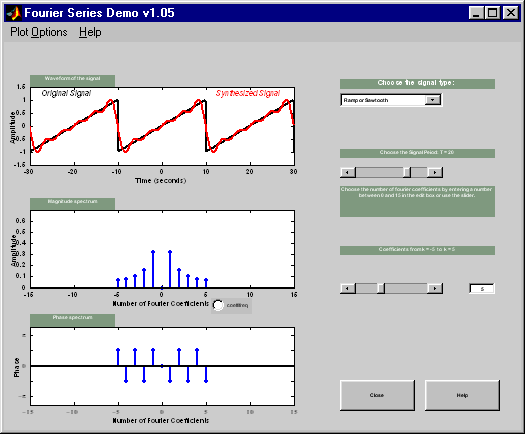

|  |
The Fourier series Demo is a GUI that
shows Fourier Series synthesis using different numbers of Fourier
coefficients. One of the following signals can be synthesised:
- Square wave
- Triangle
- Ramp (or) Sawtooth
- Full-Wave rectified Sine
- Full-Wave rectified Cosine
- Half-Wave rectified Sine
- Half-Wave rectified Cosine
Features:
- Users can choose from one of the available signals shown above.
- The actual and synthesised signal, along with the Magnitude and Phase
spectrum of the Fourirer series coefficients are displayed.
- Option to set Period of signal
- Plot option to set the width of signals displayed is available, and
enables the tool to be effectively used as a lecture aid in a classroom
environment.
|